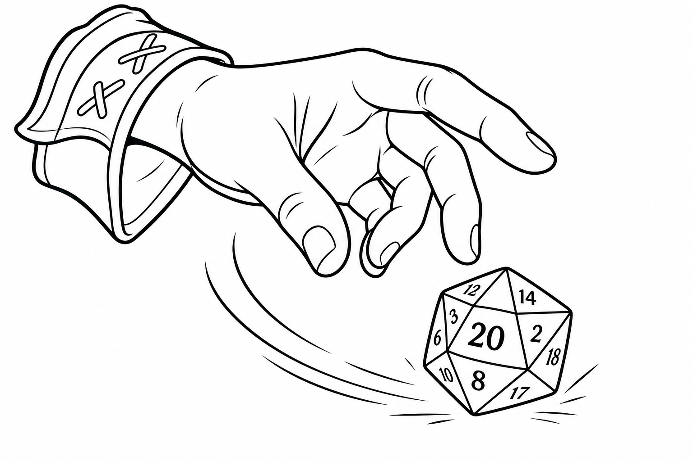
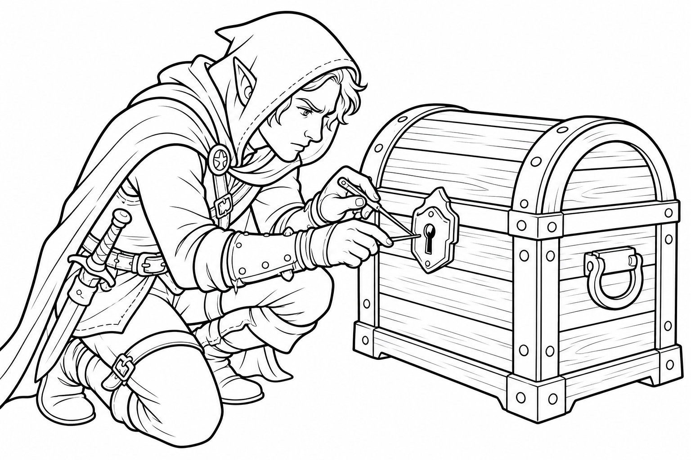
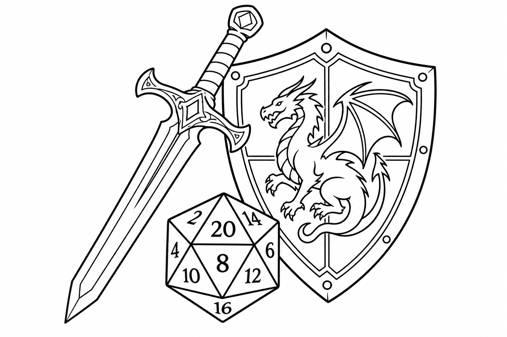
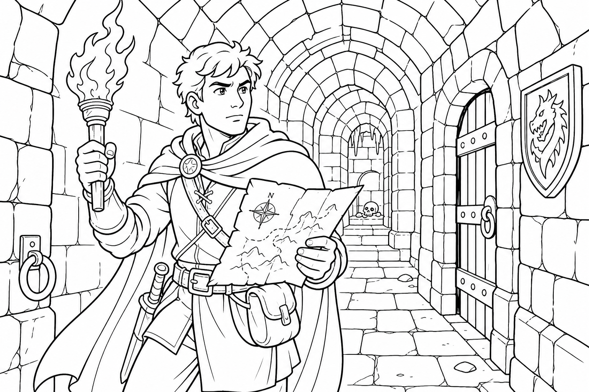
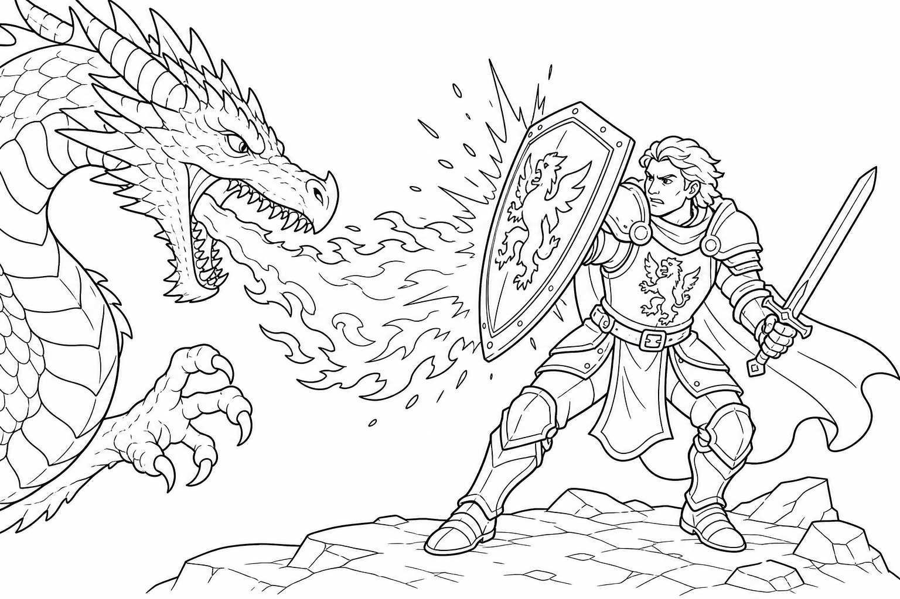
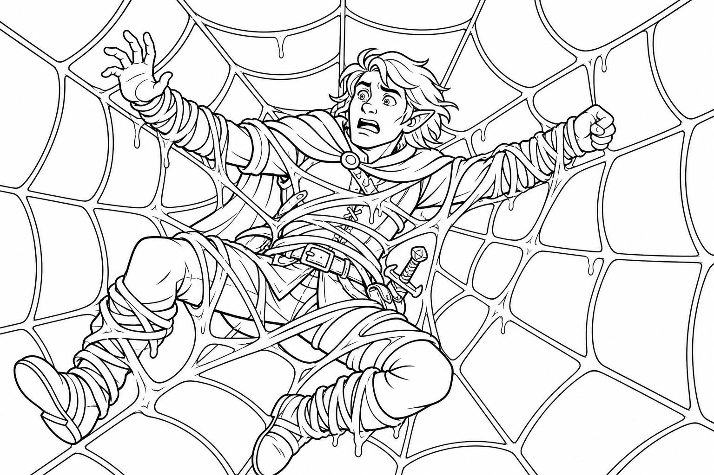
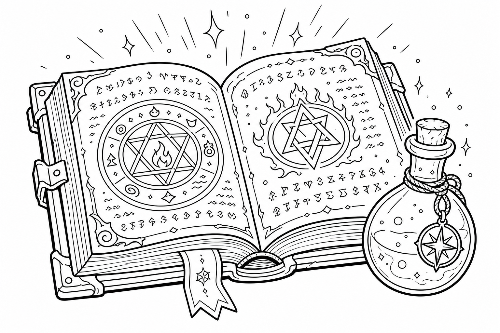
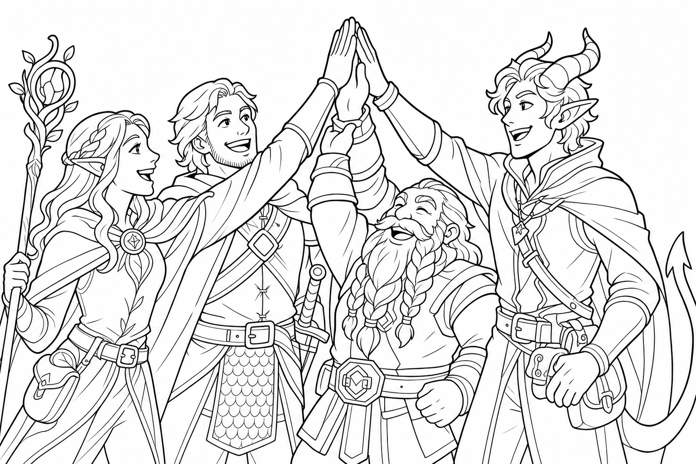

Dungeons & Dragons
Hero's Handbook
Welcome, Adventurer!
Dungeons & Dragons is a game of imagination, teamwork, and rolling dice. You and your friends will create heroes, explore dangerous dungeons, outsmart villains, and find epic treasure.
One person is the Dungeon Master (DM). They are the narrator and the referee. They describe the world, play the monsters, and tell you what happens when you try to do something cool.
Chapter 1: The Core Rules

🎲 The Golden Rule: The d20
Whenever you want to do something risky—like jumping over a pit, sneaking past a guard, or swinging a sword—you roll the 20-sided die (d20).
- Roll the d20.
- Add your bonus (written on your character sheet).
- Tell the DM your total.
If your total meets or beats the Target Number (called a Difficulty Class or Armor Class), you succeed! If it’s lower, you fail (which usually leads to something funny or dangerous!).
Advantage & Disadvantage
Sometimes, things are really easy or really hard. The DM might tell you that you have Advantage or Disadvantage.
- Advantage: You have the upper hand! Roll two d20s and take the HIGHER number.
- Disadvantage: Things are tough! Roll two d20s and take the LOWER number.
Note: If you have both Advantage and Disadvantage at the same time, they cancel each other out. You just roll one d20 normally.
Natural 20s and Natural 1s
When you roll the d20 for an attack, look at the number on the die before you add your bonuses.
- Natural 20: A critical success! You automatically hit the monster, and it's a Critical Hit (you get to roll double the damage dice!).
- Natural 1: A critical failure! You automatically miss your attack, no matter how high your bonuses are.
Heroic Inspiration
If you do something really brave, funny, or clever, the DM might give you Heroic Inspiration. You can spend this Inspiration later to reroll any d20 roll that you just failed! You can only have one Inspiration at a time, so use it to save the day!
Specific Beats General
This rulebook has a lot of general rules (like "you can only take one Action per turn"). But sometimes, a special spell or class ability says something different (like "you can take two Actions"). When a specific rule breaks a general rule, the specific rule wins!
Rounding Down
If you ever have to divide a number in half (like taking half damage from a fire spell), and it ends up as a fraction (like 7 divided by 2 is 3.5), always round down (so it becomes 3).
Chapter 2: Your Hero's Origins

To make your hero, the first thing you choose is your Species. This is what your character looks like and where they come from. There are 10 main species in D&D, and each one gives you special, magical traits!
Aasimar
Heroes touched by the magic of the upper heavens.
- Celestial Resistance: You are resistant to radiant (holy) and necrotic (dark) magic.
- Darkvision: You can see in the dark.
- Healing Hands: You can magically heal a friend by touching them.
- Celestial Revelation: When you get stronger, you can temporarily sprout glowing wings or shine with blinding light!
Dragonborn
Tall, scaly warriors who look like humanoid dragons.
- Draconic Ancestry: You choose a dragon color (like Red, Blue, or Green). This gives you resistance to that type of damage (like Fire, Lightning, or Poison).
- Breath Weapon: You can exhale a blast of destructive energy from your mouth! A Red Dragonborn breathes fire, while a White Dragonborn breathes ice.
- Darkvision: You can see in the dark.
Dwarf
Tough, bearded miners and smiths who live in mountain fortresses.
- Dwarven Resilience: You have advantage on saving throws against poison, and you resist poison damage.
- Darkvision: You can see in the dark.
- Stonecunning: You have a magical sense for underground areas and stonework.
- Toughness: You get extra Hit Points (health) every time you level up.
Elf
Graceful, long-lived people with pointy ears who love nature and magic.
- Darkvision: You can see in the dark.
- Fey Ancestry: Magic can't put you to sleep, and it's hard to charm you.
- Keen Senses: You are naturally very good at spotting hidden things.
- Trance: Elves don't sleep! You just meditate for 4 hours a night while remaining totally aware of your surroundings.
Gnome
Short, energetic inventors and illusionists who love discovering new things.
- Darkvision: You can see in the dark.
- Gnomish Cunning: You have Advantage on Intelligence, Wisdom, and Charisma saving throws against magic. (It's very hard to trick a Gnome!).
Goliath
Massive, incredibly strong people who live on the highest mountain peaks.
- Giant Ancestry: You are related to Giants! You can choose a giant type (like Stone, Fire, or Cloud) to get a special power, like turning your skin to stone to block damage, or teleporting short distances.
- Powerful Build: You count as one size larger when determining how much weight you can carry, push, or drag. You are super strong!
Halfling
Short, cheerful people who love good food, cozy homes, and grand adventures.
- Lucky: If you roll a 1 on a d20 for an attack, ability check, or saving throw, you can reroll the die! (You must use the new roll).
- Brave: You have Advantage on saving throws against being frightened.
- Halfling Nimbleness: You are so small you can run right through the legs of giant monsters!
Human
Adaptable, ambitious, and brave. Humans are good at a little bit of everything.
- Versatile: You get to choose an extra Skill to be good at.
- Resourceful: You get a free "Heroic Inspiration" every day after you sleep, which lets you reroll a bad die roll when you really need it!
Orc
Fierce, unstoppable warriors with powerful builds and tusks.
- Adrenaline Rush: You can run super fast toward an enemy as a Bonus Action, and doing so gives you temporary extra health!
- Relentless Endurance: If you get knocked down to 0 Hit Points, you can choose to drop to 1 Hit Point instead. You refuse to fall down!
- Darkvision: You can see in the dark.
Tiefling
People with horns and tails who have a tiny bit of fiendish magic in their blood.
- Darkvision: You can see in the dark.
- Fiendish Legacy: You can choose to be resistant to Fire, Cold, or Poison damage.
- Innate Magic: As you level up, you naturally learn how to cast a few spells, like creating magical darkness or rebuking enemies with fire, without needing a spellbook!
Chapter 3: Your Hero's Job (Classes)

Your Class is your job in the adventuring party. It determines what weapons you use, if you can cast spells, and what special moves you have. There are 12 main classes!
Barbarian
A fierce warrior who uses their anger to become unstoppable. When a Barbarian enters a Rage, they hit harder and take less damage from weapons. They don't wear heavy armor; their muscles and toughness protect them! (Primary Stat: Strength)
Bard
A magical musician or storyteller. Bards use songs and speeches to cast spells. They can heal friends, charm enemies, and give out Bardic Inspiration—a magical bonus die that helps their friends succeed on important rolls. (Primary Stat: Charisma)
Cleric
A holy champion who gets their magic from a powerful god. Clerics are the best healers in the game, but they also wear heavy armor and can blast undead monsters with blinding holy light! (Primary Stat: Wisdom)
Druid
A protector of the wilderness. Druids cast nature magic (like controlling vines or summoning lightning). Their coolest power is Wild Shape, which lets them magically transform into animals like wolves, bears, or giant spiders! (Primary Stat: Wisdom)
Fighter
The ultimate weapon master. Fighters know how to use every sword, bow, and shield in the world. They get a power called Action Surge, which lets them take a whole extra turn in the middle of combat to attack super fast! (Primary Stat: Strength or Dexterity)
Monk
A martial arts expert. Monks don't need swords or armor. They use a magical energy called Focus to run up walls, catch arrows out of the air, and punch enemies multiple times in a single second. (Primary Stat: Dexterity & Wisdom)
Paladin
A holy knight who swears a sacred oath to do good. Paladins wear the heaviest armor, heal with their hands, and use Divine Smite to make their sword strikes explode with radiant holy energy. (Primary Stat: Strength & Charisma)
Ranger
A wilderness survival expert and monster hunter. Rangers are amazing with bows and tracking. They cast a little bit of nature magic and often have animal companions (like a pet wolf or hawk) that help them fight. (Primary Stat: Dexterity & Wisdom)
Rogue
A sneaky ninja or clever thief. Rogues are experts at picking locks and disarming traps. In combat, they use Sneak Attack to do massive damage if they hit an enemy who is distracted or if they are hiding in the shadows. (Primary Stat: Dexterity)
Sorcerer
A magic user who was born with superpowers (maybe their great-grandpa was a dragon!). Sorcerers don't study books; magic just flows out of them. They use Sorcery Points to twist their spells, like casting two spells at once or casting a spell silently. (Primary Stat: Charisma)
Warlock
A magic user who made a deal with a powerful, spooky creature (like an alien, a fairy queen, or a demon) to get their powers. Warlocks shoot powerful magical lasers called Eldritch Blasts and get their magic back very quickly when they rest. (Primary Stat: Charisma)
Wizard
A brilliant student of magic. Wizards carry a giant Spellbook. They are the most versatile magic users in the game, capable of learning hundreds of different spells, from shooting fireballs to turning invisible or teleporting! (Primary Stat: Intelligence)
Chapter 4: Stats & Skills

Every character has 6 main Ability Scores. These numbers measure how good you are at different things. They give you a Modifier (usually between -1 and +5) that you add to your d20 rolls.
| Ability Score | What it measures | Example of when you use it |
|---|---|---|
| Strength (STR) | Muscle and physical power. | Swinging an axe, lifting a boulder, breaking down a door. |
| Dexterity (DEX) | Agility, reflexes, and balance. | Shooting a bow, doing a backflip, dodging a fireball. |
| Constitution (CON) | Health, stamina, and toughness. | Holding your breath underwater, surviving poison. |
| Intelligence (INT) | Memory, reasoning, and book-smarts. | Remembering history, figuring out how a magic puzzle works. |
| Wisdom (WIS) | Awareness, intuition, and street-smarts. | Spotting a hidden trap, tracking a monster in the woods. |
| Charisma (CHA) | Charm, confidence, and leadership. | Tricking a guard, performing a song, intimidating a bully. |
Skills and Proficiency
Skills are specific things you can be good at. When you create your character, you pick a few Skills to be Proficient in. This means you have trained in them! When you roll a d20 for a Skill you are Proficient in, you get to add a special bonus called your Proficiency Bonus.
Here are the 18 Skills in the game and the Stat they use:
- Acrobatics (DEX): Balancing on a tightrope, escaping a grab.
- Animal Handling (WIS): Calming down a scared horse or angry dog.
- Arcana (INT): Knowing secrets about magic, spells, and magical items.
- Athletics (STR): Climbing a cliff, swimming in a rushing river, wrestling.
- Deception (CHA): Telling a convincing lie or wearing a disguise.
- History (INT): Remembering lore about ancient kingdoms and wars.
- Insight (WIS): Reading someone's face to tell if they are lying to you.
- Intimidation (CHA): Acting scary to make someone back down.
- Investigation (INT): Searching a room for hidden clues or secret doors.
- Medicine (WIS): Bandaging wounds and diagnosing sickness.
- Nature (INT): Knowing about plants, weather, and animals.
- Perception (WIS): Spotting hiding enemies or hearing quiet footsteps.
- Performance (CHA): Singing, dancing, or acting for an audience.
- Persuasion (CHA): Convincing someone to help you nicely.
- Religion (INT): Knowing about gods, holy symbols, and demons.
- Sleight of Hand (DEX): Picking a pocket or doing a coin trick.
- Stealth (DEX): Sneaking around without being seen or heard.
- Survival (WIS): Following tracks, finding food, and not getting lost.
Chapter 5: Equipment & Magic Items

A hero is only as good as their gear! Before you leave town, you need to buy armor to protect you and weapons to fight with.
Armor Class (AC)
Your Armor Class is how hard it is for monsters to hit you. If you wear no armor, your AC is 10 + your Dexterity modifier. Wearing armor makes this number go up!
| Armor Type | Examples | How it protects you |
|---|---|---|
| Light Armor | Leather, Studded Leather | Very flexible! You add your full Dexterity modifier to your AC. |
| Medium Armor | Hide, Chain Shirt, Scale Mail | A mix of metal and leather. You can add up to +2 from your Dexterity to your AC. |
| Heavy Armor | Chain Mail, Plate Armor | Thick steel! It gives you a very high AC, but you don't get to add your Dexterity to it at all. It's also very loud, so you have Disadvantage on Stealth checks. |
| Shields | Wooden or Metal Shield | Holding a shield in one hand gives you a flat +2 to your AC! |
Weapons
Weapons are split into two categories: Simple (easy to use, like a club) and Martial (requires training, like a giant broadsword). They also have special properties!
- Finesse: You can use your Dexterity instead of Strength to attack with this weapon (like a Dagger or Rapier).
- Heavy / Two-Handed: You must use two hands to swing this massive weapon (like a Greataxe or Greatsword). Small races (like Halflings and Gnomes) have Disadvantage using Heavy weapons because they are too big!
- Thrown: You can throw this weapon at an enemy (like a Javelin or Handaxe).
Awesome Magic Items
As you explore dungeons, you might find magical treasure! Here are some famous items:
- Bag of Holding: A magic backpack that is bigger on the inside. You can fit 500 pounds of treasure inside it, but it always weighs exactly 15 pounds!
- Boots of Elvenkind: Magic boots that make your footsteps completely silent.
- Healing Potion: A red liquid that tastes like cherries. Drink it as a Bonus Action to heal 2d4 + 2 Hit Points!
- Immovable Rod: An iron rod with a button on it. If you press the button, the rod magically freezes in mid-air and cannot be moved by anything, even gravity!
Upgrading Your Gear
If you have extra gold, you can take your normal weapons and armor to a Master Blacksmith or an Enchanter to make them even better!
- Silvered Weapons: The blacksmith coats your weapon in pure silver. This hurts monsters (like Werewolves and Ghosts) that are immune to normal weapons!
- Adamantine Armor: Made from the hardest metal in the world. If you wear Adamantine armor, any Critical Hit against you becomes a normal hit instead.
- Mithral Armor: A beautiful, shiny metal that is as strong as steel but as light as a feather. If you wear heavy Mithral armor, it doesn't give you Disadvantage on Stealth checks!
- Magical Pluses (+1, +2, +3): An enchanter can add a magical "Plus" to your weapon or armor. A +1 weapon gives you a +1 bonus to your attack and damage rolls. +1 armor increases your Armor Class by +1!
- Elemental Runes: An enchanter can carve a glowing magical Rune into your weapon. When you hit a monster, it explodes with Fire, Frost, or Lightning damage!
- Ioun Stones: These are legendary glowing crystals. When you activate one, it floats in the air and slowly orbits around your head like a tiny moon, giving you a permanent magical power (like no longer needing to eat, or boosting your Strength!).
Chapter 6: Adventuring & Exploration

When you aren't fighting monsters, you are exploring the world! The DM will describe what you see, and you tell the DM what you want to do.
Vision and Light
Dungeons are dark and scary. You need to be able to see!
- Bright Light: Normal daylight or standing right next to a torch. You can see perfectly.
- Dim Light: Shadows or moonlight. It's hard to see, so you have Disadvantage on Perception checks that rely on sight.
- Darkness: Pitch black! You are totally Blinded unless you have a torch or special vision.
- Darkvision: Many species (like Elves and Dwarves) have Darkvision. This lets them see in the dark as if it were Dim Light!
Resting & Healing
Adventuring is tiring work! You need to rest to heal your wounds and get your magic back.
- Short Rest: A 1-hour break to eat lunch and bandage your wounds. You can spend "Hit Dice" (special dice on your character sheet) to heal some of your Hit Points.
- Long Rest: 8 hours of sleep. You heal ALL your Hit Points and get all your magic Spell Slots back. You can only do this once a day!
Hazards
- Falling: If you fall from a high place, you take 1d6 bludgeoning damage for every 10 feet you fall! Be careful around cliffs!
- Suffocating: You can hold your breath for a number of minutes equal to 1 + your Constitution modifier. After that, you start running out of air!
Chapter 7: Combat!

When monsters attack, time slows down into Rounds and Turns. A Round is 6 seconds in the game world, but it gives everyone at the table a chance to take a turn.
Step 1: Roll Initiative
Before the fight starts, everybody rolls Initiative (a d20 + your DEX bonus). The DM rolls for the monsters. The DM counts down from the highest number to the lowest. This is the turn order!
Step 2: Take Your Turn
On your turn, you can do THREE things (plus talking!):
1. Move
You can walk up to your Speed (usually 30 feet, or 6 squares on a map). You can break this up! For example, you can move 15 feet, attack a goblin, and then move 15 feet back.
2. Action
This is your main move! You can choose ONE of these:
- Attack: Swing your sword or shoot your bow.
- Cast a Spell: Use a magical attack or heal a friend.
- Dash: Run twice as fast (giving you extra movement).
- Disengage: Run away safely. If you do this, monsters don't get a free hit on you when you run away.
- Dodge: Focus on dodging. Any monster attacking you has Disadvantage until your next turn.
- Help: Distract a monster to give your friend Advantage on their next attack.
- Hide: Roll a Stealth check to try and become unseen.
- Use an Object: Drink a healing potion or pull a lever.
3. Bonus Action
A quick extra move. You can only do this if a spell, weapon, or class rule specifically says it takes a "Bonus Action." If you don't have a special Bonus Action ability, you just skip this step.
Reactions (Not on your turn!)
You get one Reaction per round. This is a special move you can do when it is not your turn.
The most common Reaction is an Opportunity Attack. If a monster is standing right next to you and tries to run away without using the Disengage action, you get to swing your sword at them for free as they run away!
Cover
Hiding behind things makes you harder to hit! If you are behind a barrel or a wall, your Armor Class (AC) goes up.
- Half Cover: (Like a low wall). Gives you +2 to your AC.
- Three-Quarters Cover: (Like peeking out of a window). Gives you +5 to your AC.
- Total Cover: (Completely behind a wall). You can't be targeted by attacks or spells at all!
Damage Types, Resistance, and Vulnerability
There are many ways to get hurt in D&D! Weapons usually do Slashing (swords), Piercing (arrows), or Bludgeoning (hammers) damage. Magic can do Fire, Cold, Lightning, Poison, Acid, Radiant (holy), Necrotic (dark), Force, Psychic, or Thunder damage.
- Resistance: If you are Resistant to a damage type, you take HALF damage from it. (A Red Dragonborn takes half damage from fire!).
- Vulnerability: If you are Vulnerable to a damage type, you take DOUBLE damage from it. (An Ice Monster takes double damage from fire!).
- Immunity: If you are Immune, you take ZERO damage.
Health & Dying
- Hit Points (HP): This is your health. If you take damage, your HP goes down.
- Zero HP: If your HP hits 0, you fall unconscious. You aren't dead yet, but you are dying!
- Death Saving Throws: On your turn, if you are at 0 HP, you must roll a d20 (no bonuses). If you roll a 10 or higher, it's a Success. If you roll a 9 or lower, it's a Failure.
- If you get 3 Successes, you stabilize (you stop dying, but stay asleep).
- If you get 3 Failures, your character dies.
- If a friend heals you even 1 HP, you wake up instantly!
Chapter 8: Conditions & Hazards

Sometimes monsters do nasty things to you that give you a "Condition." Here is what they mean:
| Condition | What happens to you? |
|---|---|
| Blinded | You can't see! You automatically fail checks that require sight. Your attacks have Disadvantage, and enemies attacking you have Advantage. |
| Charmed | You think the monster is your best friend! You can't attack the monster that charmed you. |
| Deafened | You can't hear! You automatically fail checks that require hearing. |
| Exhaustion | You are super tired! You get a minus to your d20 rolls. The more exhausted you get, the bigger the minus! Get some sleep to fix it. |
| Frightened | You are terrified! You have Disadvantage on ability checks and attacks as long as you can see the monster, and you can't willingly walk closer to it. |
| Grappled | A monster grabbed you! Your Speed becomes 0. You can't move until you escape. |
| Invisible | No one can see you! You have Advantage on your attacks, and enemies have Disadvantage when attacking you. |
| Paralyzed | You are frozen stiff! You can't move or speak. Attacks against you have Advantage, and if a monster hits you from close up, it's an automatic Critical Hit! |
| Poisoned | You feel sick! You have Disadvantage on attack rolls and ability checks. |
| Prone | You fell down! You have to spend half your movement to stand back up. If you attack while lying down, you have Disadvantage. Enemies standing right next to you have Advantage to hit you! |
| Restrained | You are tied up (like in a giant spider web)! Your Speed is 0, your attacks have Disadvantage, and enemies have Advantage to hit you. |
Chapter 9: Magic & Spells

If your character can cast spells, you are a spellcaster! Magic is powerful, but it has rules.
Cantrips vs. Leveled Spells
- Cantrips: Simple, easy magic tricks (like shooting a small fire bolt or making a glowing light). You can cast these as many times as you want, all day long!
- Leveled Spells: Powerful magic (like shooting a massive fireball). To cast these, you have to spend a Spell Slot (think of them like magic energy batteries).
- If you cast a Level 1 spell, you use up a Level 1 Spell Slot.
- When you run out of Spell Slots, you can't cast powerful magic until you take a Long Rest to recharge!
How to Cast a Spell (Components)
To cast a spell, you usually need to do three things (the spell will tell you which ones you need):
- Verbal (V): You have to chant magic words out loud. (You can't cast these if you are gagged or in a magical zone of silence!).
- Somatic (S): You have to wave your hands in a magical pattern. (You need at least one free hand to do this).
- Material (M): You need a magical item, like a magic wand, a wizard's staff, or a holy symbol, to focus the magic.
Areas of Effect
Some spells don't just hit one person; they explode and hit a whole area! If you are caught in an Area of Effect, you usually have to make a Saving Throw to dodge out of the way.
- Cone: Shoots out from your hands like a megaphone (like a Dragon's breath).
- Line: Shoots straight forward in a thick beam (like a Lightning Bolt).
- Sphere: Explodes outward in a giant circle (like a Fireball).
- Cube: Fills a square room with magic.
Concentration
Some spells are so powerful that you have to focus really hard to keep them going (like a spell that makes you fly, or a spell that summons a flaming sword). This is called Concentration.
- You can only concentrate on ONE spell at a time. If you cast a new concentration spell, the old one turns off instantly!
- If you get hit by a monster while concentrating, you have to roll a Constitution Saving Throw. If you fail, you lose your focus and the spell turns off!
Chapter 10: Know Your Monsters

The world is filled with dangerous creatures. Instead of memorizing every single monster, it helps to know the different Monster Types. Each type shares similar traits, which can help you figure out how to defeat them!
Beasts
Normal, non-magical animals like Wolves, Bears, and Giant Spiders. They rely on their claws, teeth, and natural instincts. Spells that let you talk to animals work great on them!
Undead
Creepy creatures brought back to life by dark magic, like Zombies, Skeletons, and Vampires. They usually don't need to breathe or sleep, and they are often immune to poison. Holy magic (Radiant damage) is their biggest weakness!
Fiends (Demons & Devils)
Evil creatures from the lower planes of existence. They are tricky, love making bad deals, and are often resistant to fire and normal weapons. You usually need magic or holy weapons to really hurt them.
Aberrations (Outsiders)
Alien, weird creatures with tentacles and mind powers, like Mind Flayers. They don't follow the normal rules of nature and often attack your mind directly with Psychic damage.
Constructs
Magical robots and animated objects, like Stone Golems or flying swords. Because they are made of stone, metal, or wood, you can't poison them, put them to sleep, or read their minds!
Elementals
Creatures made entirely out of pure elements: Fire, Water, Earth, or Air. A Fire Elemental will burn you if you touch it, but it takes extra damage if you hit it with cold or water magic!
Fey
Magical tricksters from the fairy realms, like Sprites and Pixies. They love nature, illusions, and playing pranks on adventurers. They are very hard to charm because they are the masters of charming others!
Monstrosities
Strange, cursed, or magically mutated creatures that aren't normal animals. The Owlbear (half owl, half bear) and the Mimic (a monster disguised as a treasure chest) are classic monstrosities!
Dragons
The ultimate boss monsters. Giant, flying, magical reptiles. They are highly intelligent, have terrifying breath weapons (like fire, ice, or acid), and love hoarding treasure. Never fight a dragon unless you are fully prepared!
Chapter 11: How to be a Great Player

D&D is a team game! The goal isn't to "win" or "beat the DM." The goal is to tell an awesome story with your friends. Here are some tips to be the best player at the table:
- Share the Spotlight: Make sure everyone gets a turn to do something cool. If your friend hasn't spoken in a while, ask their character for advice!
- Listen to the DM: The DM works hard to prepare the game. Listen closely when they describe the room, and don't talk over them.
- Accept Failure: Sometimes you roll a 1. It happens to everyone! Instead of getting mad, lean into it. Failing a roll often leads to the funniest and most memorable moments in the game.
- Be Creative: You don't just have to say "I attack with my sword." You can say, "I swing on the chandelier, kick the table over, and slash at the goblin!" The DM loves it when you use your imagination.
- Have Fun! At the end of the day, you are playing a game with your friends. Cheer when they roll a 20, laugh when things go wrong, and enjoy the adventure!
You have learned the rules. Now, grab your dice, gather your friends, and step into the dungeon. Your adventure awaits!